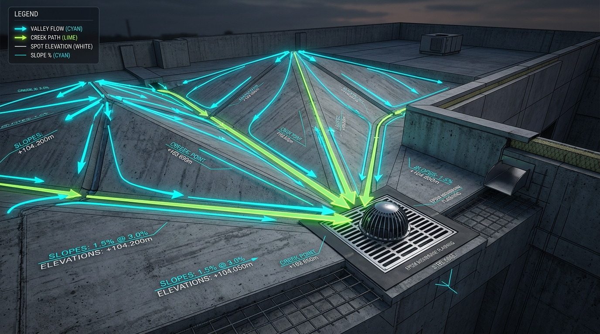

Visual Digital Twin
3D Architectural Modeling & Drainage Flow
Explore the geometric accuracy of the AutoSlope, Creaser, and Ridge algorithms in realistic architectural environments.



Eliminate hundreds of tedious manual hours across roof drainage topography, sheet packing, section cut generation, and parameter synchronization with mathematically verified 1-click algorithms.
Explore the geometric accuracy of the AutoSlope, Creaser, and Ridge algorithms in realistic architectural environments.

Adjust your project scope below to see exact empirical time savings compared to standard manual Revit drafting.
Every tool is backed by real Revit 2026 C# source code, empirical benchmarks, and parameter mapping.
Batch-calculates and applies constant-slope elevations across all roof vertices relative to designated drain elements using Dijkstra geometric graph traversal.
KD-Tree nearest-drain lookup with Dijkstra graph engine, Excel export, and 13 AutoSlope_* parameters written directly to roof elements.
Places crease detail items along valid roof ridge and valley edges, filtered by minimum length and validated by Dijkstra path connectivity to drains.
Detects basin boundaries between drain groups and automatically generates 3D ridge and valley boundary lines connecting elevation peak points.
Automatically subdivides internal roof voids and penetration loops, projecting orthogonal guide points toward drains for precise contour folding.
Converts 2D CAD/detail line sketches into fully parametric Revit Roof elements with boundary curve validation and clean closure.
Scans roof geometry for drain fixtures and automatically generates callout views centered on each drain basin with standardized bounding boxes.
Batch places spot slope and spot elevation tags at critical roof vertices, ridges, and drain low-points with automatic collision avoidance.
Bin-packing 2D layout algorithm that automatically places dozens of plan, section, and detail views onto sheets with collision-free margins.
Reorganizes viewports on existing sheets based on configurable view priority groups (e.g., Plans first, then Sections, then Drafting Views).
Discovers all active section markers within a plan view and distributes them onto organized presentation sheets automatically.
Instantly generates perpendicular and longitudinal Revit section views directly from selected 2D detail lines or room boundaries.
Places perpendicular architectural detail section cuts along roof perimeter edges, parapets, and coping transitions.
Automatically calculates the tight bounding polygon of selected roofs and sets crop boundaries and view depth with standardized offset margins.
Automatically locates and places referenced section head markers on corresponding plan and elevation views across the whole model.
Intelligently renames section views following sequential grid or orientation patterns (e.g., North-South, West-East, Level-based).
Batch renames project views using customizable naming templates with tokens for Level, Discipline, View Type, and Scope Box.
Sequentially renumbers viewport detail bubbles on sheets based on top-left to bottom-right or grid coordinate layout.
Traces linked architectural, structural, or MEP geometry into 2D detail lines with type-based mapping and boundary clipping.
Automatically detects parallel and continuous detail line strings and generates aligned chain dimensions with clean offset spacing.
Converts imported DWG vector layers inside the Family Editor into native Revit Symbolic Lines and Model Lines with layer-to-style mapping.
Guided step-by-step wizard to batch-bind shared parameters from text files to Revit categories as Instance or Type parameters in one pass.
Interactive checkbox hierarchy tree of worksets, categories, and element types; allows instant 3D view isolation and selection.
Batch renames project worksets using search-and-replace, prefix/suffix rules, and discipline standard numbering.
Engineered with advanced computational geometry to eliminate errors in mission-critical BIM deliverables.
Instead of naive Euclidean straight-line distance, AutoSlope constructs an edge-weighted graph over the roof boundary and slab triangulation, ensuring drainage distance honors true folded facets and curved profiles.
High-density vertex lookup utilizes balanced k-dimensional spatial trees, resolving nearest drain basins in O(log n) time even on massive commercial roofs with hundreds of drain units.
Sheet placers analyze view title positions, annotation crop offsets, and printable titleblock bounds to solve NP-hard 2D layout optimization, guaranteeing zero viewport overlapping.